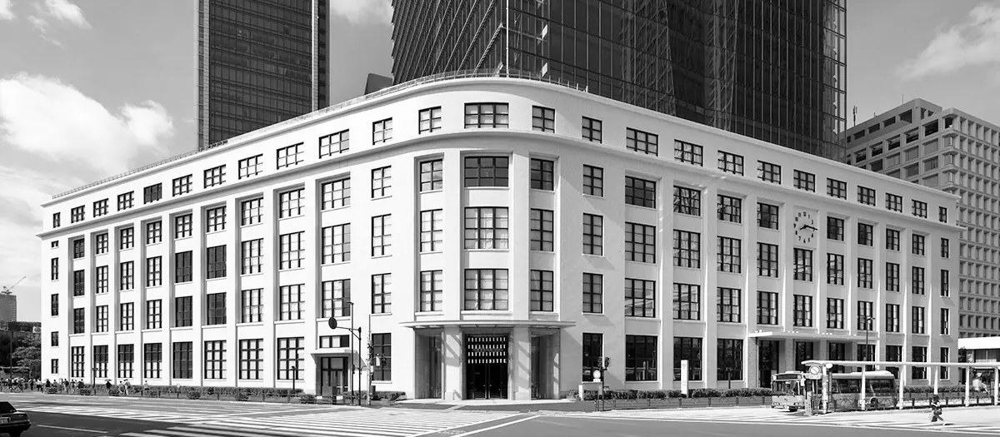
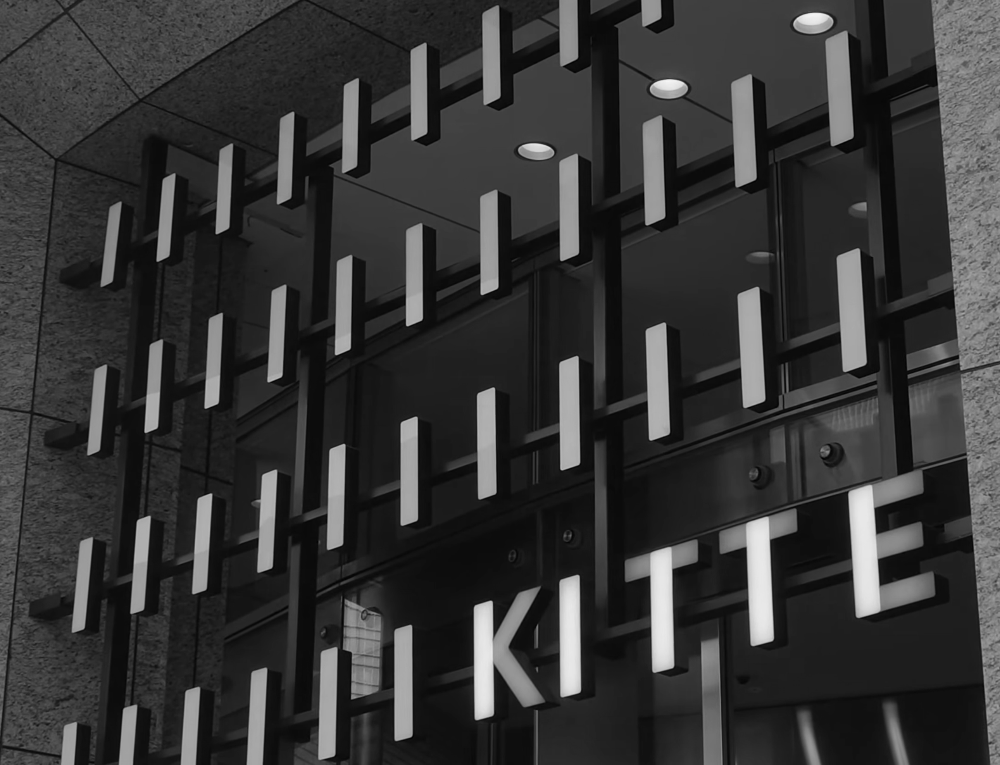
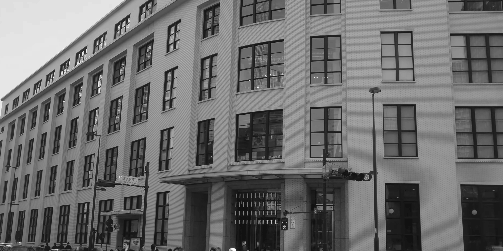
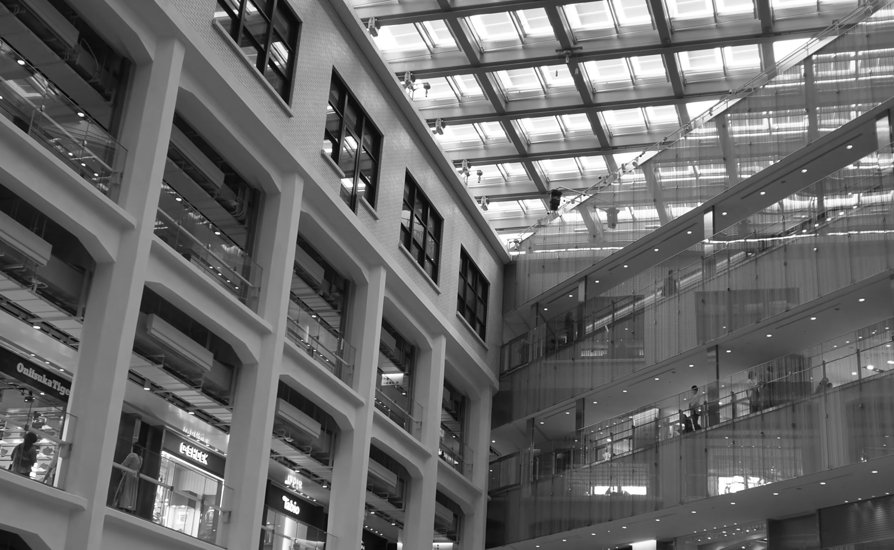
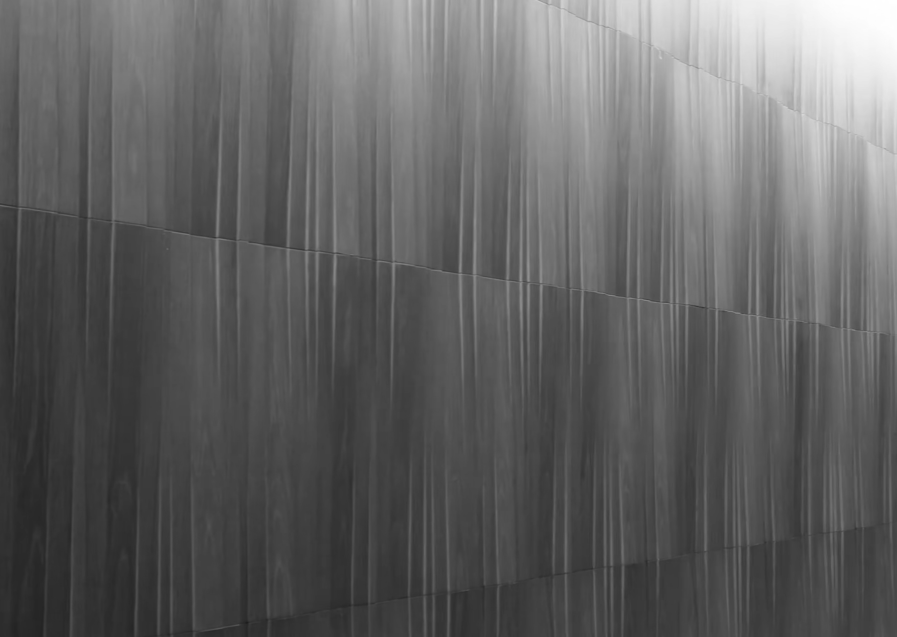
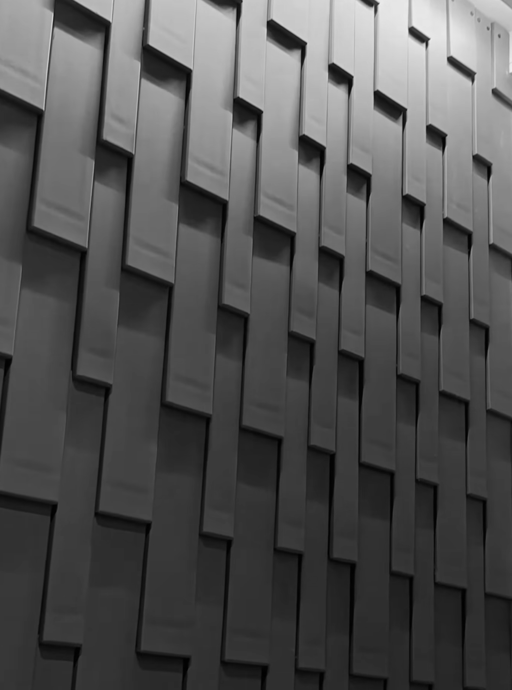

Kitte Marunouchi & JP Tower
키테 마루노우치 & JP 타워
동선은 일단 도쿄역에서 시작해보도록 하겠습니다. 이곳은 역 앞 광장에서부터 아래쪽은 상가이고 위쪽은 고층 사무실인 곳이 대부분이다보니, 비슷하게 생긴 건물들 투성이인데요. 그중에서 마루노우치 남쪽 출구로 나오면, 바로 눈앞에 도로를 따라 유일하게 흰색 벽으로 되어 있는 건물을 볼 수 있습니다. 이곳이 바로 도쿄중앙우체국과 붙어있는 쇼핑몰, Kitte 마루노우치입니다. 매 편마다 계속 나오는 것 같은, 다작으로 유명한 일본의 국민 건축가. 쿠마 켄고 사무소의 프로젝트로 2013년에 오픈한 이곳은, 구 중앙우체국 건물의 일부를 리노베이션한 공간인데요. 도쿄역을 바라보는 두 입면을 가능한 보존한 채, 안쪽에 현대식 상가와 고층빌딩을 지어올린 곳입니다. 새하얗게 덮인 옛 벽면과 새로 생긴 유리면들이 대비되어 아주 멋진 광장을 만들어내는데요.


일정한 간격의 기둥과의 연결성을 위해, 재건축된 부분 또한 마찬가지로 일정한 간격의 패턴들로 구성되어 있어서, 높은 천장고와 함께 기하학적 경이로움을 자아내고 있었습니다. 그렇게 층별로 테마가 있는 공간답게 각 층의 벽들이 서로 다른 패턴으로 이루어져 있었습니다. 처음엔 왜 이렇게까지 했을까 싶었는데, 개인적인 느낌이었지만 이를 한 층씩 모아보면 기와나 나무살, 다다미 등 마치 일본 전통 가옥에서 볼 수 있는 소재나 텍스처들로 구성되어 있음을 알 수 있었습니다. 한 곳만 봐서는 알기 힘들지만, 그게 오히려 과하지 않으면서도 나무를 이용한 패턴을 즐겨 쓰는, 쿠마 켄고의 이 공간에 대한 컨셉을 확인할 수 있는 부분이었습니다. 정말 그들에게 의미 있는 것들로 가득가득 채워진 공간이라는 인상을 받았는데요. 다만, 하입보다는 클래식한 브랜드 위주로 구성되어 있기 때문에 당장의 트렌드를 읽을 수 있는 공간은 아니었지만, 그럼에도 이곳 또한 도쿄역이라는 관문에서 방문자들에게 대중적인 문화와 브랜드를 보여주는 중요한 역할을 하고 있기 때문에 한 번쯤 방문할 필요가 있다고 생각되는 곳이었습니다. 어떻게 옛날 건물을 이렇게 세련되게 바꿀 수 있는지 참 대단하다고 생각되네요.





